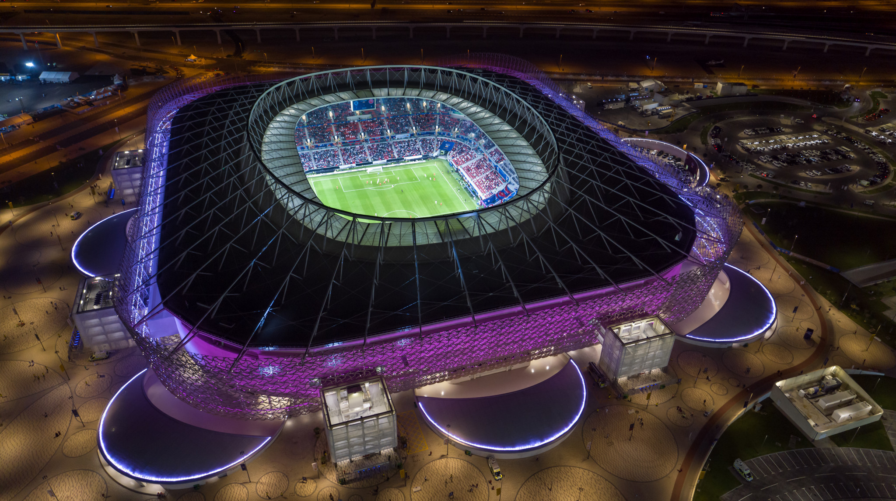
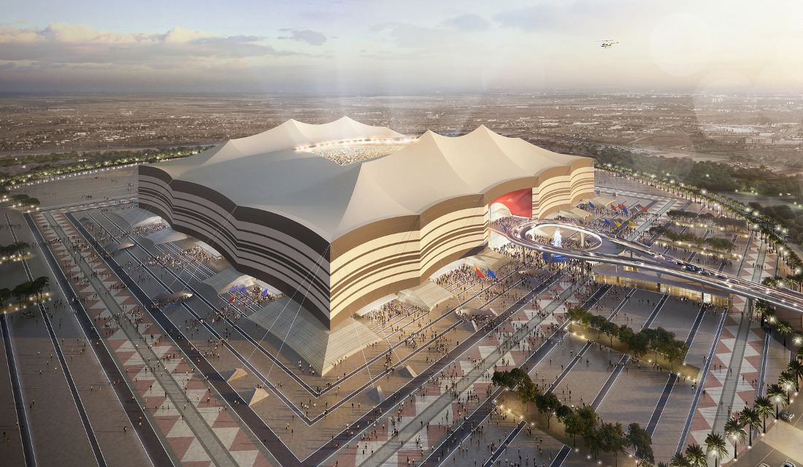
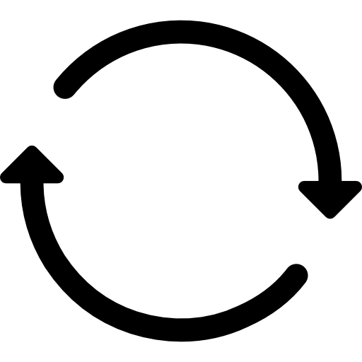

Ahmad Bin Ali Stadium
Ahmed bin Ali Stadium, popularly known as the Al-Rayyan Stadium, is a multi-purpose stadium in Al Rayyan, Qatar, It is currently used mostly for football matches and it is the home to Al-Rayyan Sports Club and Al-Kharitiyath Sports Club. The stadium, built in 2003, had a seating capacity of 21,282.
FIFA World Cup Qatar 2022 - Emblem Reveal
The Official Emblem of the 22nd edition of the FIFA #WorldCup was unveiled on the 4th of September back in 2019 as FIFA and host country Qatar reached another major milestone on the road to the world’s greatest football showpiece.
The emblem’s design embodies the vision of an event that connects and engages the entire world, while also featuring striking elements of local and regional Arab culture and allusions to the beautiful game.

Al Bayt Stadium
The Al Bayt Stadium is a retractable roof football stadium located in Al Khor city and it is the second largest stadium after Lusail. It is confirmed to host the first match scheduled for November 21st with 60,000 spectators.
The municipality lies in the northeast coast of Qatar and it is considered to be one of the major cities.
2018 FIFA World Cup - Film Trailer
A timeless story of hope, passion, heartbreak and joy from Russia 2018. FIFA Film crews take you closer than ever before.

Al Janoub Stadium
One of Qatar's oldest continuously inhabited areas, Al Wakrah was long a centre for pearl diving and fishing. The traditional dhow boats used in these pursuits inspired the design of Al Janoub Stadium. At its inauguration, a stunning pre-match show paid tribute to Al Wakrah's heritage and to Zaha Hadid, the architect whose firm designed the stadium's boldly futuristic shape.
2018 FIFA World Cup Russia - TV Opening
This title sequence is inspired by the wonderful designs of the Imperial Eggs by Peter Carl Faberge, which represented the perfect combination of creativity and craftsmanship, with a secret inside.
We have interpreted the beauty of the Imperial Eggs into a richly detailed and jewelled football, each panel has its own identity and elements that represent the richness of Russian culture.
At the heart of each of these panel sits a jewel, which houses archive of each nation who has won the FIFA World Cup™ - Brazil, Uruguay, England, Italy, Argentina, France, Spain and Germany.
Khalifa International Stadium
Khalifa International Stadium, also known as National Stadium, is a multi-purpose stadium in Doha, Qatar, as part of the Doha Sports City complex, which also includes Aspire Academy, Hamad Aquatic Centre, and the Aspire Tower. It is named after Khalifa bin Hamad Al Thani, Qatar's former Emir.

Education City Stadium
Education City Stadium is a football stadium which is located in Al Rayyan, Qatar, and was built as a venue in time for the upcoming 2022 FIFA World Cup held in Qatar. The stadium is located within several university campuses at the Qatar Foundation's Education City.
Lusail Stadium
The Lusail Iconic Stadium is located in Lusail city and it is the biggest stadium amongst all arenas in Qatar. It was built in April 2021 and will seat 80,000 spectators. The stadium will host the opening and final games of the 2022 FIFA World Cup.
Lusail city is being developed as part of Qatar 2030 vision, but it is expected to accommodate 450,000 people. As well as planned to have residential areas, islands resorts, commercial districts and etc.
